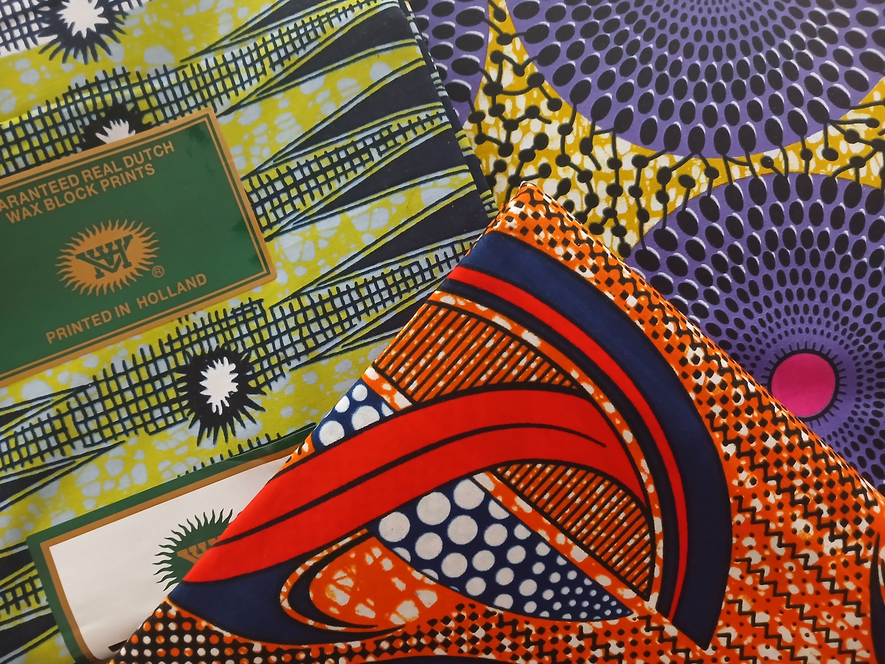
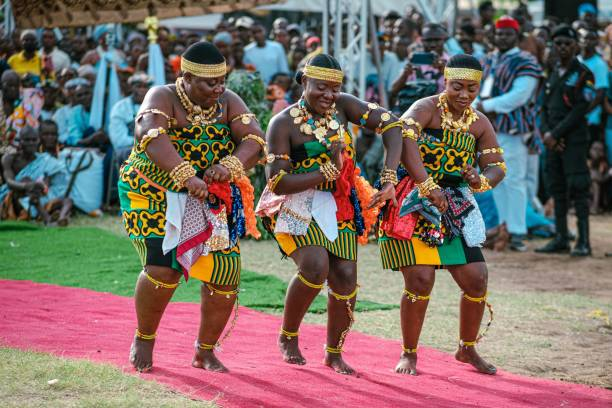
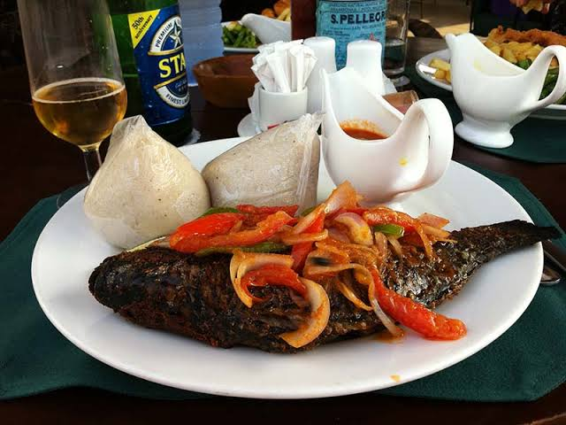

Traditional wear for Asante Kingdom
Beautiful patterns and colors worn during important ceremonies and festivals.

Taste the flavors, wear the colors and feel the rhythm of Ghana. Its traditions are alive in every meal, festival and song.

Beautiful patterns and colors worn during important ceremonies and festivals.

Energetic steps and rhythms that celebrate community and heritage.
.jpg)
Rice cooked in a rich tomato and pepper sauce, a favorite at every celebration.

Soft fermented corn and cassava served with spicy pepper sauce.
Kente is a hand-woven cloth made by the Ashanti and Ewe peoples. Each color and pattern carries a meaning, and it is worn at important ceremonies.
Ghana celebrates many festivals during the year, such as Homowo, Aboakyir and Panafest, with parades, drumming, dancing and traditional dress.
From highlife and hiplife to Afrobeats and traditional drumming, music is part of everyday life. Visitors can join workshops to learn drumming and dance.
Browse markets for wood carvings, beads, batik fabrics and baskets, and watch artisans at work in craft villages.
Join a cooking class, a drumming workshop or a village visit during your trip.
Plan your visit